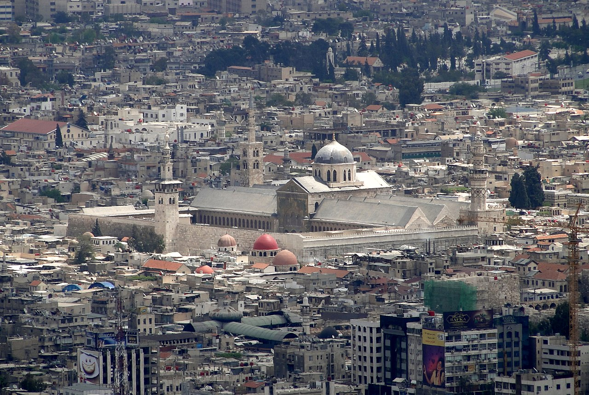
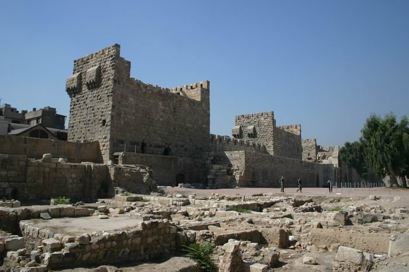
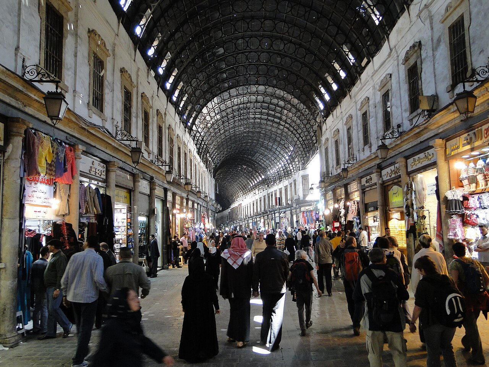
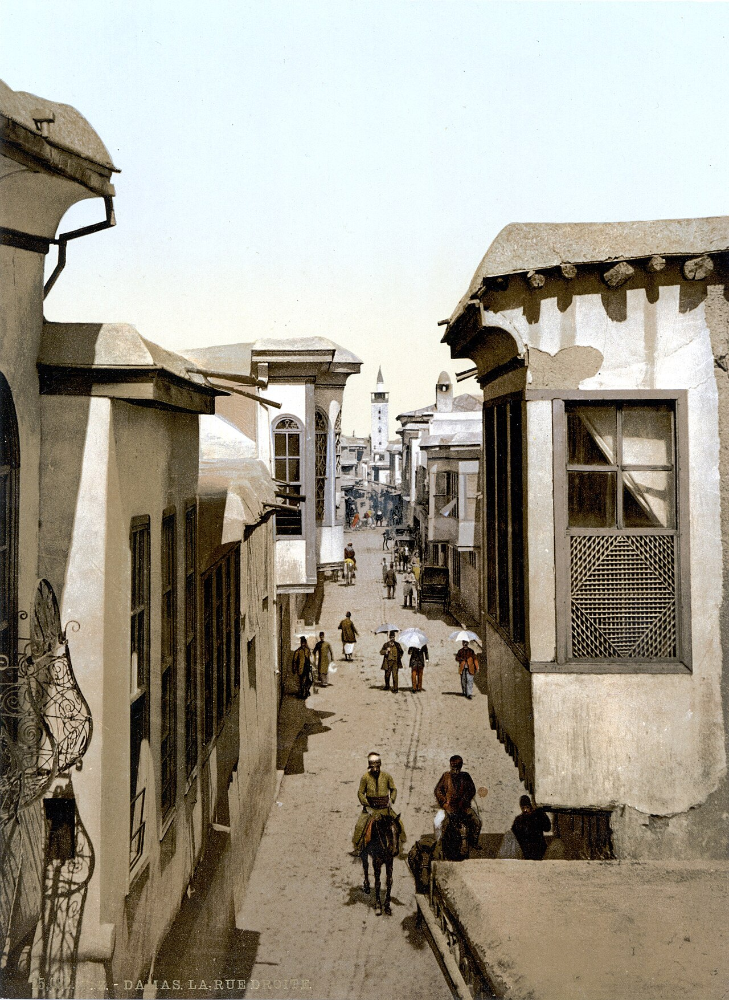
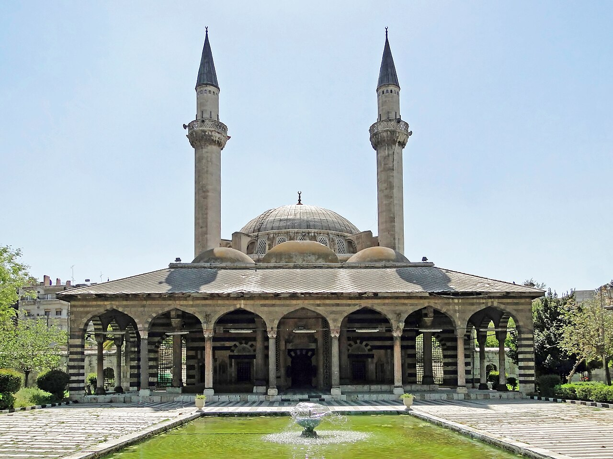
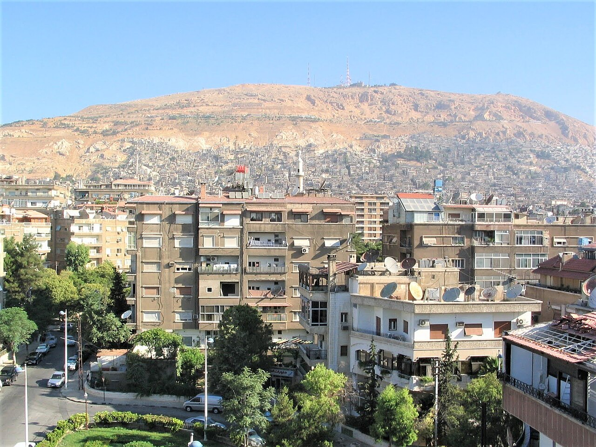

معلم ديني
المسجد الأموي الكبير
تحفة معمارية إسلامية بُنيت في القرن الثامن الميلادي، ويُعدّ من أقدم وأعظم المساجد في العالم.
أبرز المواقع التاريخية والأثرية التي تروي حكاية دمشق عبر العصور.
جولة بين أهم المعالم التي تجسّد عراقة المدينة وجمالها.

تحفة معمارية إسلامية بُنيت في القرن الثامن الميلادي، ويُعدّ من أقدم وأعظم المساجد في العالم.

حصن تاريخي يقع في الزاوية الشمالية الغربية للمدينة القديمة، شاهدٌ على تاريخ عسكري طويل.

أشهر أسواق دمشق المسقوفة، يمتد بطرازه التراثي ويعجّ بمحلات الأقمشة والحلويات والتحف.

المعروف بـ«باب شرقي»، شارع روماني عريق يخترق المدينة القديمة ذُكر في النصوص القديمة.

مجمّع معماري عثماني أنيق على ضفاف بردى، يتميّز بقبابه ومآذنه الرشيقة وحدائقه.

يطلّ على دمشق بأكملها، ومنه تُشاهَد المدينة في أبهى صورها خاصةً عند الغروب وفي الليل.